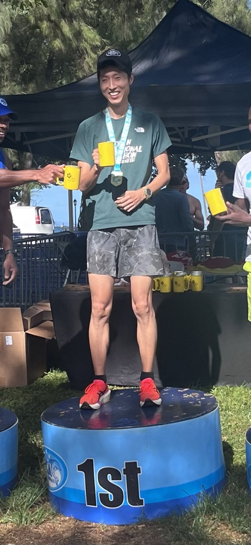
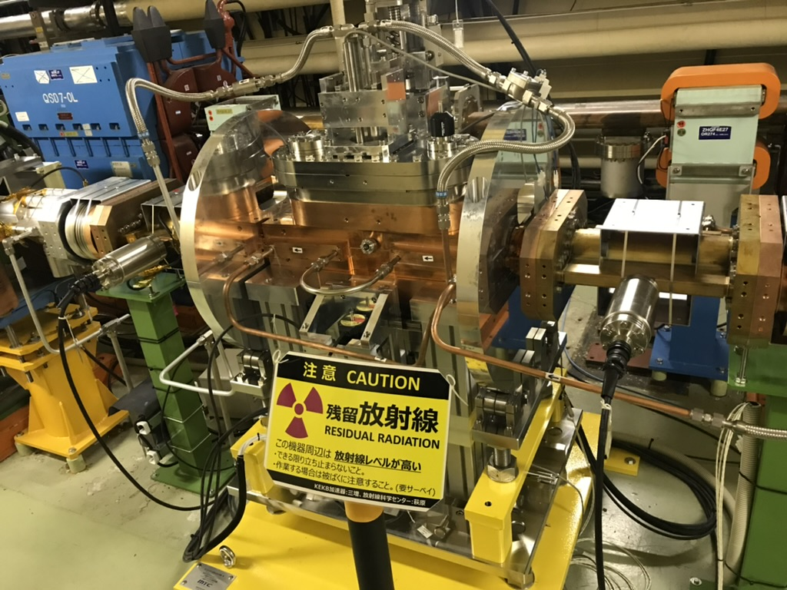

About
Yoshihara Group

I am an Assistant Professor of Physics at the University of Hawaii at Mānoa. I work on collider experiments (SuperKEKB/Belle II) to search for physics beyond the Standard Model. Previously, I was a member of the ATLAS experiment at CERN.
My group also develops detector and readout systems, including low-latency AI/ML on hardware.
Latest
News
- July 2026 Our paper, Development of a Silicon-Based Ultra-Fast X-Ray Beam Size Monitor for SuperKEKB, was submitted to Nuclear Instruments and Methods in Physics Research Section A (NIM A). Read the preprint on arXiv.
- June 2026 The US-Japan Program awarded three-year funding for the SuperKEKB XRM project, an ultrafast beam-size measurement effort with Yoshihara as Co-PI. Read the department news.
- May 2026 Tommy Lam joined the group as a postdoctoral researcher. He works on TOP operation and DAQ system upgrades, as well as dark-sector physics analyses.
- Mar 20, 2026 The UH News press release highlighted Christopher Ketter's Belle II Technical Thesis Award. Read the press release.
- Feb 25, 2026 The Beam Instrumentation Workshop was held at the University of Hawaiʻi at Mānoa.
- Feb 2026 Postdoc Christopher Ketter received the Belle II Technical Thesis Award.
Focus
Join Our Group!
We connect accelerator diagnostics, electronics R&D, Belle II detector operation, and physics analysis. Join us to work with international teams and develop hands-on skills.
- Accelerator diagnosticsBOR / XRM / SuperKEKB beam instrumentation
- Electronics R&DOpen-source ASIC, FPGA/RFSoC, and low-latency AI/ML
- Belle II operationKLM / TOP readout, firmware, and trigger upgrades
- Physics analysisSemileptonic BSM and dark-sector searches
Open to UH and international students. See Prospective Students.

